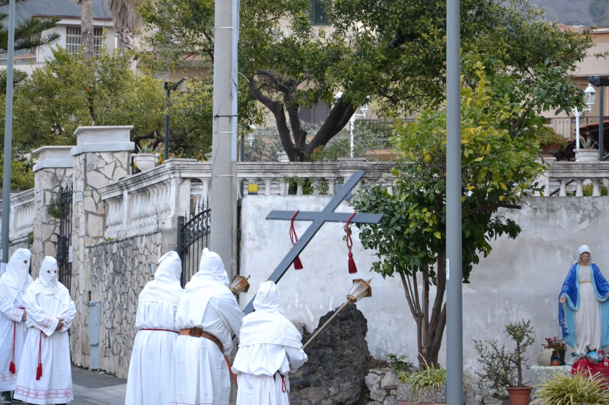
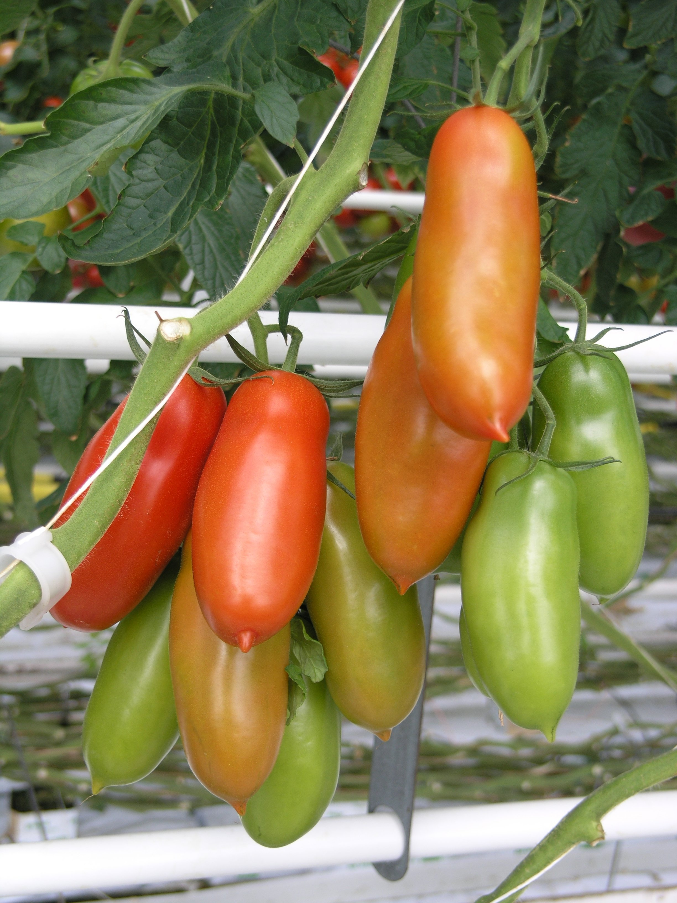

Il territorio di Sarno fu abitato a partire dal Neolitico (per via della sua vicinanza all’omonimo fiume) dai popoli villanoviani. I villanoviani rappresentano la fase più antica della cultura etrusca e, come gli etruschi, davano grande importanza alla sepoltura. Una delle tombe più importanti ritrovate apparteneva probabilmente a una sacerdotessa; all'interno di questa tomba sono presenti decine di vasi, fra cui uno molto grande per rappresentare l’importanza della defunta e un altro di origine greca. Sul capo della defunta era presente una corona fatta di spirali di bronzo per tenere fermo il velo sopra la testa e una collana di ambra. Alcune di queste tombe sannitiche contengono del lapislazzuli (pietra proveniente dal territorio afghano). Le popolazioni locali entrarono quindi a contatto con i coloni greci e con gli Etruschi; sembra che il nome Sarno sia un termine etrusco, con il significato di "fiume dalle molte sorgenti". Nel VI secolo nonostante una diminuzione del popolamento, la valle appare ancora abitata da Osci e Sanniti. Dopo la fine delle guerre sannitiche, sotto il dominio di Roma, gli abitanti di Sarno partecipano alla battaglia di Canne nel 216 a.C. durante la seconda guerra punica, come si legge in Silio Italico, Punica, VIII, 536-537. Vicino al fiume fu fondato un teatro intorno alla metà del II a.C.; il teatro venne ristrutturato in epoca augustea e fu aggiunto un proscenio con la scritta DSPFCI (De Sua Pecunia Faciendum Curavit Iterum fece rifare a proprie spese). Nel 79 d.C. il Vesuvio eruttò portando alla distruzione di Pompei, Ercolano e parte della valle del Sarno, determinando così l'abbandono del territorio. Nel Museo Archeologico della Valle del Sarno sono conservati reperti e opere dal Neolitico al Medioevo.
Una delle festività tipiche di Sarno è la processione dei biancovestiti. Il Venerdì Santo, da centinaia di anni, durante il tramonto viene svolto questo evento in cui sfilano in strada silenziosamente gli incappucciati, fermandosi a ogni chiesa mentre uno di loro porta con sé una croce. Il loro silenzio è interrotto da cori che rappresentano il pianto dei familiari di Cristo durante la crocifissione.

processione dei Biancovestiti
dominio pubblico (CC0)
L’economia di Sarno è da sempre basata sul commercio. Già i dati archeologici restituiscono materiali come l’ambra (comunemente trovata nel Mar Baltico o nel fiume Simeto in Sicilia) e il lapislazzuli (comunemente trovati in Afghanistan), oppure vasi di origine greca. Sotto il dominio romano, oltre ad essere situata sulla Via Annia, l'antica Sarno esportava viti, ortaggi e grano prodotti nelle ville rustiche del territorio. Al giorno d’oggi uno dei beni agricoli più famosi è il pomodoro San Marzano. Fonti: Museo archeologico nazionale della Valle del Sarno.
Secondo alcune testimonianze orali, nel 1770, come dono del Regno del Perù al Regno di Napoli, vennero dati dei semi di pomodoro che col tempo, grazie al clima mediterraneo, assunsero le attuali caratteristiche. Nel '900, dalla zona di San Marzano, Sarno e Nocera, si ha la presenza certa di questa coltura e da lì in poi si inizia a sviluppare un grande apprezzamento verso il pomodoro San Marzano, facendolo diventare così popolare che al giorno d’oggi è esportato e richiesto anche in altri continenti.

pomodoro San Marzano DOP
Foto di Goldlocki (2005) - Wikipedia